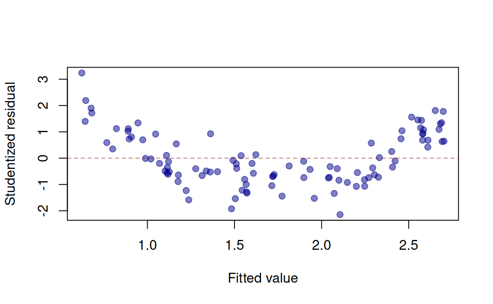
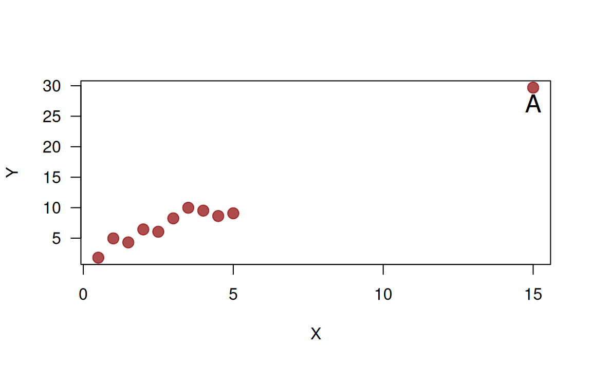
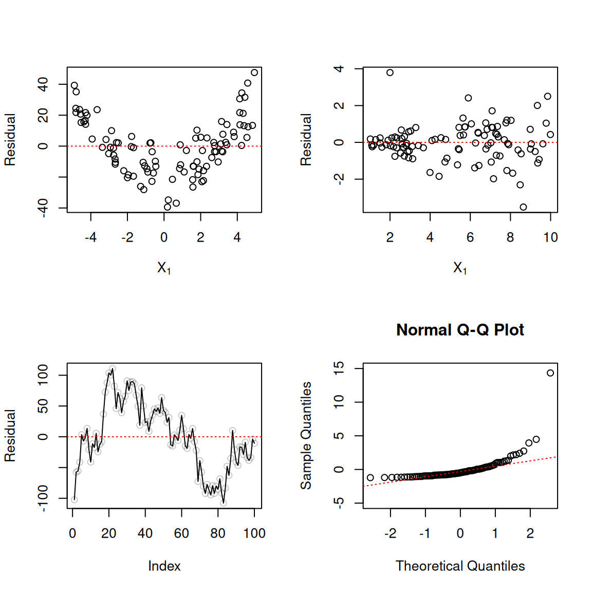

BANA 7042: Assignment 1
Linear Regression
Please clearly circle (or highlight) your multiple choice answers
Question 1: In a multiple linear regression model, which of the following are considered as random?
- The continuous response or dependent variable \(\boldsymbol{Y}\)
- The expected value of \(\boldsymbol{Y}\)
- The unknown parameter \(\boldsymbol{\beta}\)
- The unknown error variance \(\sigma^2\)
Question 2: When developing a linear regression model, adding additional predictors to the model will
- Always increase \(R^2\)
- Always increase adjusted \(R^2\)
- Sometimes decrease \(R^2\)
- Always decrease adjusted \(R^2\)
Question 3: What is the best way to identify potential multicollinearity?
- Including interaction terms in the linear regression model
- Variance inflation factors (VIFs)
- Residual diagnostic plots
- Adjusted \(R^2\)
Question 4: When building a linear regression model of the form \(Y = \beta_0 + \beta_1 X_1 + \beta_2 X_2 + \epsilon\) for a data set, the presence of multicollinearity in the data may result in _________ standard errors for the slope coefficients (\(\beta_1\) and \(\beta_2\)) than if the data came from an orthogonal design (i.e., when \(X_1\) and \(X_2\) are uncorrelated).
- Smaller
- Larger
Question 5: What does the following residual versus fitted value plot suggest about a model between a single predictor \(X\) and \(Y\)?
- Heteroscedasticity of the error term
- A nonlinear between \(X\) and \(Y\)
- Non-normality of the error term
- Satisfactory residuals
Question 6: When a linear regression model is being developed, adding additional variables to the model will
- always decrease model SSE
- always decrease model AIC
- always increase model adjusted \(R^2\)
- always decrease model MSE
Question 7: The ordinary residuals refer to
- \(\bar{Y} - \widehat{Y}\)
- \(Y - \widehat{Y}\)
- \(\bar{Y} - \bar{Y}\)
- \(\widehat{Y} - Y\)
Question 8: For a fitted simple linear regression model, which one of the following properties is NOT true?
- The fitted regression line passes through the point \(\left(\bar{X}, \bar{Y}\right)\)
- The residuals sum to zero: \(\sum_{i=1}^n e_i = 0\)
- \(\sum_{i=1}^n Y_i = \sum_{i=1}^n \widehat{Y}_i\)
- The residuals, \(e_i\), are guaranteed to be independent
Question 9: The diagonal elements of hat matrix, also referred to as the hat values or leverage values, measures the influence of observation \(i\) on the regression line when removing observation \(i\).
- True
- False
Question 10: In a regression study, a 95% confidence interval for \(\beta_1\) was given as: \(\left(-5, 2\right)\). What does this confidence interval mean?
- The interval \(\left(-5, 2\right)\) contains the true \(\beta_1\) with 95% probability
- 95% of all possible \(\beta_1\)’s are in\(\left(-5, 2\right)\)
- 95% of the interval \(\left(-5, 2\right)\) contains the true \(\beta_1\)
- If we were to repeat the experiment many times (i.e., repeatedly take a new sample of size \(n\) and compute the same confidence interval), roughly 95% of the generated intervals would contain the true \(\beta_1\)
Question 11: In a regression study, a 95% confidence interval for \(\beta_1\) was given as: \(\left(-5, 2\right)\). Which of following is correct?
- The 90% interval will be wider than the 95% interval
- The 99% interval will be wider than the 95% interval
Question 12: Point A in the far right is likely to be

- High influential point of the regression line
- High leverage point
Question 13: Which of the following cases can lead to multicollinearity?
- There are indicator variables being used as predictors
- A predictor can be expressed as (or well-approximated by) a linear combination of the other predictors
- The variances across all predictors are not the same
- The predictors are not normally distributed and are positively skewed
Question 14: What does the last line of output “F-statistic….p-value: …” indicate in the following multiple regression output?
Call:
lm(formula = mpg ~ cyl + disp + hp + wt, data = mtcars)
Residuals:
Min 1Q Median 3Q Max
-4.0562 -1.4636 -0.4281 1.2854 5.8269
Coefficients:
Estimate Std. Error t value Pr(>|t|)
(Intercept) 40.82854 2.75747 14.807 1.76e-14 ***
cyl -1.29332 0.65588 -1.972 0.058947 .
disp 0.01160 0.01173 0.989 0.331386
hp -0.02054 0.01215 -1.691 0.102379
wt -3.85390 1.01547 -3.795 0.000759 ***
---
Signif. codes: 0 '***' 0.001 '**' 0.01 '*' 0.05 '.' 0.1 ' ' 1
Residual standard error: 2.513 on 27 degrees of freedom
Multiple R-squared: 0.8486, Adjusted R-squared: 0.8262
F-statistic: 37.84 on 4 and 27 DF, p-value: 1.061e-10- All of the coefficients are significantly different from 0 at the \(\alpha = 0.05\) level
- None of the independent variables explains any of the variation in \(Y\)
- At least one of the independent variables explains some of the variation in \(Y\)
- The model explained 1.061e-10 of the variability in \(Y\)
Question 15: If one wishes to incorporate seasonal dummy variables for monthly data into a regression model, how many dummy variables should be in the model?
- 12
- 11
- 10
- 1
Question 16: Consider a simple linear regression model where \(\log(Y) = \beta_0 + \beta_1 X + \varepsilon\). If \(\beta_1 = 0.05\), which best describes this coefficient’s interpretation?
- A one-unit increase in \(X\) is associated with a 0.05 unit increase in \(Y\)
- A one-unit increase in \(X\) is associated with an approximate 5% increase in \(Y\)
- A one-unit increase in \(X\) is associated with a 5-unit increase in \(Y\)
- A one-unit increase in \(X\) is associated with a 0.05% increase in \(Y\)
Part II: short answer response
For the multiple linear regression model \(Y_i = \beta_0 + \beta_1 X_{1i} + \beta_2 X_{2i} + \dots + \beta_p X_{p-1, i} + \epsilon_i\)
Question 17: (2 pts.) Recall that the variance inflation factor for \(X_j\) is defined as \(VIF_j = \left(1 - R_j^2\right)^{-1}\). Explain in one sentence what \(R_j^2\) is. Explain in one sentence why it is better to use VIFs than pairwise correlations when trying to detect the presence of multicollinearity in a regression data set.
Question 18: (2 pts.) For variable selection criteria based on residuals, among \(PRESS\), \(SSE\), \(R^2\), \(R_{adj}^2\), and \(MSE\), which are “good” criteria for variable selection? Explain your reason in two sentences.
Question 19: (4 pts.) Please state one possible violation of normal linear regression model assumptions for each of the residual plots below (one sentence for each plot):

Question 20: (4 pts.) Suppose you want to build a linear regression for response variable weight ( \(Y\) ) using covariate height ( \(X_1\) ) and gender ( \(X_2 = 0\) for female and \(X_2 = 1\) for male).
Suppose you want to allow the slope (of height) to be the same for different gender but different intercept, how would you build the linear regression model? Please specify the model in one line.
Suppose you want to allow both slope (of height) and intercept to be different for different gender, how would you build the linear regression model? Please specify the model in one line.
Question 21: (2 pts.) An engineer has stated: “Reduction of the number of candidate explanatory variables should always be done using the objective forward stepwise regression procedure.” Discuss.
Question 22: (4 pts.) A junior investment analyst used a polynomial regression model of relatively high order in a research seminar on municipal bonds and obtained an \(R^2\) of 0.991 in the regression of net interest yield of bond ( \(Y\) ) on industrial diversity index of municipality ( \(X\) ) for seven bond issues. A colleague, unimpressed, said: “You overfitted. Your curve follows the random effects in the data.” Comment on the colleague’s criticism.
Question 23: (4 pts.) In a regression study of factors affecting learning time for a certain task (measured in minutes), gender of learner was included as a predictor variable (\(X_2\)) that was coded \(X_2 = 1\) if male and \(X_2 = 0\) if female. It was found that the estimated coefficient of \(X_2\) was \(\widehat{\beta}_2 = 22.3\) with a standard error of 3.8. An observer questioned whether the coding scheme for gender is fair because it results in a positive coefficient, leading to longer learning times for males than females. Comment.
Question 24: (2 pts.) A student stated: “Adding predictor variables to a regression model can never reduce \(R^2\), so we should include all available predictor variables in the model.” Comment.
Question 25: (2 pts.) Evaluate the following statement: “For the least squares method to be fully valid, it is required that the distribution of \(Y\) be normal.”
Question 26: (2 pts.) What is a residual? Why are residuals important in regression analysis?
Question 27: (3 pts.) Explain the purpose of \(k\)-fold cross-validation in regression modeling. Why is it generally preferred over a single train-test split for assessing model performance? (2-3 sentences)
Question 28: (3 pts.) Consider a dataset where the response variable \(Y\) is binary (0 or 1). Explain why ordinary linear regression is not appropriate for modeling this relationship, and what problem arises if you try to use it. (2-3 sentences)
Question 29 (Bonus): (5 pts.) An analyst wanted to fit the regression model \(Y_i = \beta_0 + \beta_1 X_{1i} + \beta_2 X_{2i} + \dots + \beta_p X_{p-1, i} + \epsilon_i\) by the method of least squares when it is known that \(\beta_2 = 4\). How can the analyst obtain the desired fit using standard statistical software (e.g., R, Python, or SAS)? No need to run any code, just describe in general how you could accomplish this.